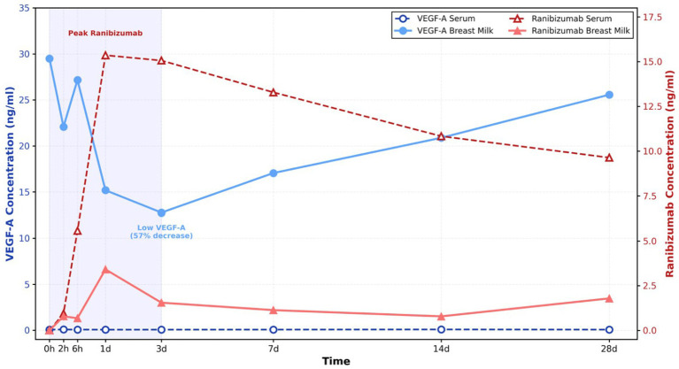
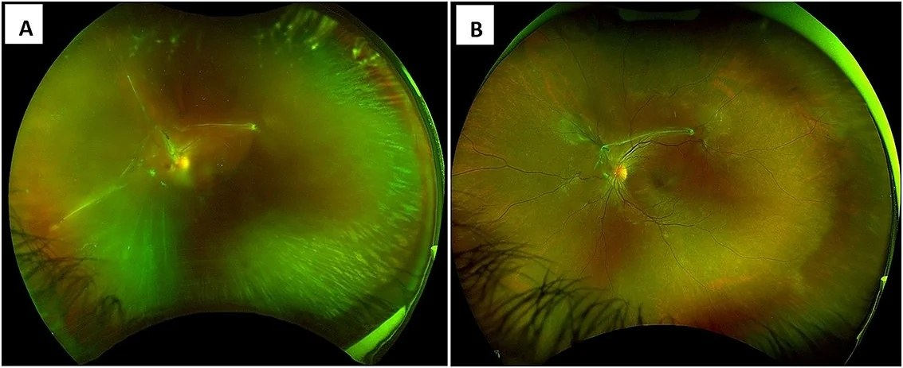
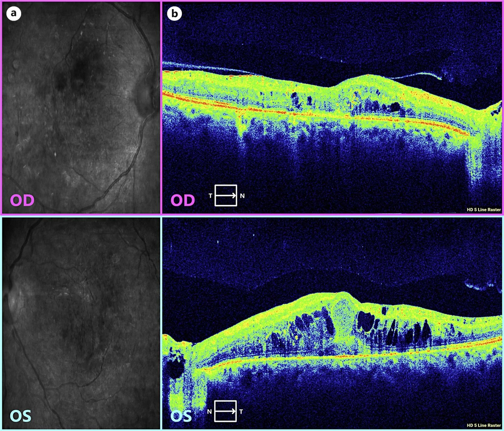

1408 — Anti-VEGF nội dịch kính trong THAI KỲ & cho con bú: chọn phân tử theo "có Fc hay không", không theo giá / Intravitreal anti-VEGF in pregnancy and lactation
Tags: pattern:tan-mach-vong-mac pattern:phu-hoang-diem pattern:xuat-huyet-dich-kinh vung:vong-mac vung:hoang-diem vung:thai-nhi protocol:anti-VEGF protocol:OCT protocol:laser-PRP protocol:test-thai
Mức chắc chắn (certainty): tổng hợp y văn (literature synthesis) — đọc trực tiếp toàn văn 4 bài mở qua Europe PMC/PMC (Ophthalmol Ther 2025; Eye 2026; Front Med 2026; Oxf Med Case Reports 2026; Case Rep Ophthalmol 2026). 3 ca nguyên văn có ảnh dùng cho Blind Quiz. Phần tính "liều tương đối cho trẻ bú" (RID) và phần khoảng cách tiêm trước sinh là suy luận (inference) từ dược động học — ghi rõ tại chỗ, không có khuyến cáo chính thức.
1. Tổng quan — vì sao "tiêm tại mắt" vẫn là chuyện toàn thân
1.1. Vật lý của phân tử quyết định số phận toàn thân (đây là lõi của bài)
Anti-VEGF không "nằm yên trong mắt". Sau khi tiêm vào thể thủy tinh, thuốc thoát qua hàng rào máu–võng mạc vào tuần hoàn. Tốc độ và mức thoát phụ thuộc hai đặc tính vật lý, không phụ thuộc "thuốc mạnh hay yếu":
- Có phân đoạn Fc hay không → quyết định tái chế qua thụ thể FcRn ở nội mô. FcRn gắn IgG trong endosome và đưa trở lại tuần hoàn → thuốc tồn tại lâu trong máu (t½ plasma tính bằng tuần). Phân tử không có Fc bị phân giải protein (proteolysis) và thải qua thận → t½ plasma tính bằng giờ.
- Khối lượng phân tử → ngưỡng lọc cầu thận ~ 60–70 kDa. Phân tử < 60 kDa (Fab 48 kDa, single-chain 26 kDa) qua được cầu thận, bị đào thải nhanh; phân tử 115–150 kDa không qua được → phải chờ phân giải.
| Thuốc | Cấu trúc | KLPT | Fc | t½ thể thủy tinh | t½ plasma | Liều |
|---|---|---|---|---|---|---|
| Bevacizumab | kháng thể đơn dòng toàn phần | 149 kDa | Có | 6–10 ngày | 21 ngày | 1,25 mg |
| Ranibizumab | Fab người hóa | 48 kDa | Không | 7,1 ngày | 0,25 ngày (~6 giờ) | 0,5 mg |
| Aflibercept | protein dung hợp thụ thể–Fc | 115 kDa | Có | 4,5–4,7 ngày | 18 ngày | 2 mg |
| Faricimab | kháng thể bispecific, Fc biến đổi giảm gắn FcRn/FcγR | 150 kDa | Có (biến đổi) | 6,7–12 ngày | 12 ngày | 6 mg |
| Brolucizumab | mảnh kháng thể chuỗi đơn | 26 kDa | Không | 4,4–5,6 ngày | 6 ngày | 6 mg |
(Bảng dựng theo bảng 2 của Ophthalmol Ther 2025, PMC12271010.)
- Suy ra hệ quả lâm sàng ngay: ranibizumab là phân tử "thoát ra toàn thân ít nhất và ngắn nhất", bevacizumab là nhiều nhất và dài nhất. Không có tích lũy giữa mũi 1 và mũi 3 với ranibizumab, nhưng có tích lũy với bevacizumab và aflibercept (tổng quan Ophthalmol Ther 2025).
- Vì sao điều này quan trọng với thai: VEGF cần cho tạo mạch bánh nhau và phôi; ức chế VEGF toàn thân kéo dài = nguy cơ lý thuyết lên nhau thai, thai và huyết áp mẹ. Vì vậy thời gian phơi nhiễm (t½), chứ không phải "nồng độ trong mắt", là biến số quyết định.
1.2. Qua nhau thai: Fc là "vé vào"
- IgG mẹ → thai không phải khuếch tán thụ động mà qua vận chuyển tích cực nhờ FcRn ở nguyên bào nuôi. Vì vậy bevacizumab, aflibercept, faricimab (có Fc) có đường vào nhau thai, còn ranibizumab (Fab, không Fc) không dùng được "vé" này → tỉ lệ qua nhau thai thấp hơn (Ophthalmol Ther 2025).
- Nói chính xác điều chưa biết: không có nghiên cứu dược động thai–nhau đủ lớn ở người với bất kỳ thuốc nào trong nhóm; kết luận "ranibizumab ít qua nhau thai" dựa trên cơ chế + nghiên cứu động vật + nồng độ máu cuống rốn lẻ tẻ, không phải thử nghiệm có đối chứng.
1.3. Cho con bú: có thuốc trong sữa, nhưng bao nhiêu và bé hấp thu được không
- Ca nguyên văn đo trực tiếp (nữ 30 tuổi, đang cho con bú 6 tháng, tiêm ranibizumab 0,5 mg cho phù hoàng điểm do tắc nhánh tĩnh mạch võng mạc): nồng độ ranibizumab trong MÁU mẹ đạt đỉnh 15,35 ng/mL, trong SỮA đạt đỉnh 3,14 ng/mL, đều tăng nhanh trong ngày đầu; VEGF-A trong sữa giảm từ 29,49 → 12,75 ng/mL trong 3 ngày đầu (giảm ~57%) rồi trở về gần mức trước tiêm; VEGF-A trong máu mẹ ổn định (Front Med 2026, PMC12900737).
- Ước tính "liều tương đối cho trẻ" (suy luận — inference): trẻ bú ~150 mL/kg/ngày × 3,14 ng/mL = 471 ng/kg/ngày = 0,47 µg/kg/ngày; liều mẹ 500 µg chia theo 60 kg = 8,3 µg/kg → RID ≈ 5,6% (dưới ngưỡng thận trọng thường dùng 10%). Thêm nữa, Fab là protein → sinh khả dụng đường uống gần bằng 0 (bị phân giải trong dạ dày). Vì vậy nguy cơ hệ thống cho trẻ bú là rất thấp; nhưng đây không phải kết luận từ thử nghiệm, và VEGF-A trong sữa giảm vẫn là thay đổi sinh lý chưa rõ hậu quả.
- Dữ liệu trên các thuốc khác: bevacizumab làm VEGF-A trong sữa giảm ~35% ở 2 tuần sau tiêm (McFarland, dẫn trong Ophthalmol Ther 2025) — tức kéo dài hơn nhiều so với nhịp 24 giờ của ranibizumab. Aflibercept làm giảm VEGF-A huyết tương mạnh hơn ranibizumab → kém ưu tiên khi cho bú.
- Chiến lược "pump and dump 3 ngày" (Basilious): vắt và bỏ sữa 3 ngày sau tiêm rồi cho bú lại → ranibizumab không đo được trong máu trẻ, VEGF-A của trẻ tương đương nhóm chứng (Ophthalmol Ther 2025).
1.4. Dữ liệu thai kỳ — ngưỡng định lượng để tư vấn (không phải để trấn an)
| Nghiên cứu | Thiết kế | Thuốc | Kết quả chính |
|---|---|---|---|
| Polizzi 2015 | loạt 3 ca | bevacizumab, tiêm tam cá nguyệt 2–3 | 3 trẻ đủ tháng khỏe mạnh; 1 ca có yếu tố nguy cơ sảy thai |
| Fossum 2018 | loạt 3 ca | ranibizumab, tiêm lúc 8, 10 và 21 tuần | 3 trẻ khỏe mạnh, không dị tật |
| Ong 2022 | hồi cứu 42 thai kỳ | ranibizumab, aflibercept | 40% (16/41) không biết mình có thai khi tiêm; 81% sinh sống (34/42), 12% sảy thai (5/42), 7% thai lưu (3/42) — phần lớn ở thai kỳ nguy cơ cao |
(Bảng 7 của Ophthalmol Ther 2025, PMC12271010.)
- Đọc đúng bảng này: 12% sảy thai và 7% thai lưu nằm trong nền sảy thai tự nhiên 10–20% của dân số chung → không chứng minh được quan hệ nhân quả, nhưng cũng không loại trừ. Đây là lý do khuyến cáo thực hành: tránh tiêm trong tam cá nguyệt 1, đặc biệt ca nguy cơ cao; và test thai trước tiêm ở phụ nữ tuổi sinh sản (Ophthalmol Ther 2025; Eye 2026).
- Ca phản diện (để cân bằng): một ca DME nặng tiêm 3 mũi bevacizumab trong thai kỳ, có đợt suy tim sung huyết (CHF) sau các mũi tiêm và thai lưu; chính nhóm tác giả kết luận thai lưu nhiều khả năng do đái tháo đường kiểm soát kém + tăng huyết áp + CHF, không phải do bevacizumab (Case Rep Ophthalmol 2026, PMC13688658). Bài học: đừng quy nhân quả một chiều, nhưng cũng đừng bỏ qua khả năng tác dụng toàn thân.
2. Mẫu hình + chẩn đoán phân biệt theo vị trí (gamut)
- Khuôn 1 — "Thai phụ nhìn mờ + dịch dưới võng mạc": gamut CNV (cận thị/AMD/do viêm) vs CSCR vs VKH vs bong thanh dịch do tiền sản giật vs choroidal osteoma biến chứng. Chốt: OCT có dịch dưới võng mạc + dịch dưới RPE + xuất huyết → CNV; FA/ICGA rò thì muộn, OCTA có mạng mạch; không có mạng mạch + tự hết → CSCR.
- Khuôn 2 — "Thai phụ đái tháo đường, xuất huyết dịch kính": gamut PDR tiến triển do thai vs DME nặng lên vs bệnh võng mạc do tiền sản giật vs tắc tĩnh mạch. Chốt: tân mạch đĩa/trước võng mạc + xuất huyết dịch kính → PDR; phù hoàng điểm không tân mạch → DME.
- Khuôn 3 — "Triệu chứng toàn thân sau mũi tiêm": gamut tác dụng toàn thân của anti-VEGF (tăng HA, protein niệu, CHF) vs tiền sản giật vs bệnh nền (ĐTĐ, bệnh tim). Chốt: thời điểm trùng mũi tiêm + tăng HA mới + phù → nghĩ anti-VEGF; tiểu cầu giảm, AST/ALT tăng, protein niệu > 300 mg/24h → tiền sản giật.
- Khuôn 4 — "Phụ nữ tuổi sinh sản, chưa biết có thai": gamut tiêm rồi mới phát hiện thai vs hoãn tiêm vs chuyển laser. Chốt: test thai nước tiểu trước tiêm; nếu đã tiêm → tư vấn, không chỉ định chấm dứt thai kỳ vì chưa có bằng chứng dị tật.
- Khuôn 5 — "Hậu sản, đang cho bú, cần tiêm": gamut ranibizumab + pump-and-dump 3 ngày vs hoãn đến khi cai sữa vs laser. Chốt: bệnh đe dọa thị lực + mẹ muốn duy trì sữa → ranibizumab + bỏ sữa 3 ngày.
3. Bảng so sánh phân biệt (ma trận đối chiếu)
| Thực thể (lựa chọn) | Đặc điểm phân tử | Chốt vào (rule-in) | Chốt loại (rule-out) | Gợi ý xác nhận |
|---|---|---|---|---|
| Ranibizumab | Fab 48 kDa, không Fc, t½ plasma 0,25 ngày | Cần tiêm khi đang mang thai/cho bú, đặc biệt tam cá nguyệt 1 hoặc ngay sau sinh | Bệnh cần tác dụng kéo dài 12–16 tuần (thì kém phù hợp) | Nồng độ sữa đỉnh 3,14 ng/mL; pump-and-dump 3 ngày |
| Aflibercept | Fusion 115 kDa, có Fc, t½ 18 ngày | Không mang thai, cần giãn khoảng tiêm | Đang mang thai — tích lũy, giảm VEGF huyết tương mạnh | Tránh trong thai kỳ nếu có lựa chọn khác |
| Bevacizumab | IgG1 149 kDa, có Fc, t½ 21 ngày | Bệnh nặng, không có lựa chọn khác, đã tư vấn | Thai kỳ/cho bú nếu còn lựa chọn — phơi nhiễm toàn thân cao nhất; không có chỉ định tiêm nội nhãn chính thức | Theo dõi HA, protein niệu, tim mạch |
| Faricimab | Bispecific 150 kDa, Fc biến đổi, t½ 12 ngày | Cần giãn khoảng tiêm 12–16 tuần ở người không mang thai | Không dùng làm "lựa chọn an toàn" — dữ liệu thai kỳ chỉ 1 ca | Chỉ dùng sau hội chẩn sản–mắt |
| Laser PRP / laser điểm | Không dùng thuốc | PDR nguy cơ cao / DME ở thai phụ — không phơi nhiễm thai | Xuất huyết dịch kính đặc che đáy mắt → không đốt được | Ưu tiên khi bệnh đáp ứng; nhược điểm: ám điểm ám điểm thị trường |
| Corticoid nội nhãn (implant) | Tác dụng tại chỗ, tan chậm | Phù hoàng điểm do viêm khi cần che phủ cả thai kỳ | Tăng nhãn áp, glaucoma, tiền sử nhiễm herpes | Theo dõi nhãn áp 4–6 tuần |
- Ảnh minh họa dược động (mục 6, ca 1) là biểu đồ nồng độ thuốc trong máu và sữa, không phải ảnh đáy mắt — đặt ở đây để đối chiếu "mắt" với "toàn thân".

4. Protocol chụp + hệ phân độ/điểm chuẩn hóa + quy trình quyết định
4.1. Trước khi tiêm: 4 bước bắt buộc
| Bước | Việc làm | Ngưỡng/ghi chú |
|---|---|---|
| 1 | Hỏi + test thai nước tiểu (mọi nữ 15–50 tuổi, kể cả đang dùng biện pháp tránh thai) | 40% (16/41) thai kỳ trong loạt Ong 2022 không được biết lúc tiêm |
| 2 | Phân tầng khẩn cấp: bệnh đe dọa thị lực ngay (CNV dưới hoàng điểm, PDR có xuất huyết dịch kính) vs có thể hoãn 3–6 tháng | Hoãn được → hoãn đến sau tam cá nguyệt 1, khám lại 4 tuần/lần |
| 3 | Chọn phân tử theo Fc | Ưu tiên ranibizumab; tránh bevacizumab nếu còn lựa chọn; faricimab = chưa đủ dữ liệu |
| 4 | Hội chẩn sản khoa trước mũi tiêm đầu tiên | Ghi vào hồ sơ: tuần thai, HA, protein niệu, đường huyết |
4.2. Trong và sau tiêm
- Kỹ thuật: tiêm 0,05 mL qua pars plana, povidone-iodine 5%, không khác người không mang thai; không dùng gây mê toàn thân.
- Theo dõi 1 tuần: huyết áp, phù, khó thở, đau ngực — đây là cửa sổ nồng độ thuốc toàn thân cao nhất (ngày 1–3).
- Theo dõi thai: siêu âm thai theo lịch sản khoa; không cần siêu âm thêm chỉ vì mũi tiêm nếu thai bình thường.
- Sau sinh: nếu mẹ muốn cho bú → vắt và bỏ sữa 3 ngày (pump-and-dump), sau đó cho bú lại; hoặc hoãn mũi tiêm đến sau khi cai sữa nếu bệnh cho phép.
4.3. Khoảng cách tiêm trước sinh (suy luận — inference, không có khuyến cáo)
- Nguyên lý: nồng độ đỉnh toàn thân ở ngày 1–3; với bevacizumab t½ 21 ngày, cần ~5 chu kỳ bán thải ≈ 105 ngày để giảm > 95%. Vì vậy nếu bệnh cho phép hoãn, tránh mũi bevacizumab trong ~3 tháng cuối; với ranibizumab (t½ 6 giờ) không cần khoảng cách này.
- Nhưng: mũi tiêm gần ngày sinh không phải chống chỉ định tuyệt đối — mất thị lực do PDR tiến triển nhanh trong thai cũng là biến cố thật. Quyết định theo cân bằng lợi ích mẹ–thai, ghi rõ trong hồ sơ.
flowchart TD
A["Thai phụ hoặc phụ nữ tuổi sinh sản cần anti-VEGF"] --> B{"Đã test thai?"}
B -->|"Chưa"| C["Test nước tiểu tại chỗ trước tiêm"]
B -->|"Có thai"| D{"Bệnh đe dọa thị lực ngay?"}
C --> D
D -->|"Không"| E["Hoãn tiêm; khám OCT 4 tuần/lần; cân nhắc laser"]
D -->|"Có"| F{"Tam cá nguyệt?"}
F -->|"1"| G["Hội chẩn sản khoa; chỉ tiêm khi lợi ích rõ; ưu tiên ranibizumab"]
F -->|"2 hoặc 3"| H["Ranibizumab 0,5 mg; tránh bevacizumab; theo dõi HA 1 tuần"]
G --> I["Theo dõi thai theo lịch sản khoa; không chấm dứt thai kỳ vì mũi tiêm"]
H --> I
I --> J{"Sau sinh: mẹ muốn cho bú?"}
J -->|"Có"| K["Vắt và bỏ sữa 3 ngày sau mũi tiêm; theo dõi trẻ"]
J -->|"Không"| L["Tiêm theo lịch thường; tư vấn ngừa thai nếu dùng aflibercept"]
K --> M["Khám lại 4 tuần: OCT, thị lực, huyết áp"]
L --> M
4.4. Phân độ dùng trong quyết định
- Bệnh võng mạc đái tháo đường: ETDRS/ICDR (mức 1–4 tăng sinh) + phân loại DME theo vị trí trung tâm; PDR nguy cơ cao = tân mạch đĩa ≥ 1/3 diện tích đĩa hoặc tân mạch trước võng mạc + xuất huyết dịch kính.
- CNV: phân loại type 1/2/3 trên OCTA; hoạt tính = dịch + xuất huyết + mạng mạch (xem bài 1407).
- Thai kỳ: không có "score" riêng; dùng tuần thai + phân tầng nguy cơ sản khoa (tiền sản giật, ĐTĐ, bệnh tim) và mức độ khẩn cấp thị lực.
- Sau tiêm: CTCAE v5.0 cho tăng huyết áp và biến cố tim mạch.
5. Biến thể bình thường và cạm bẫy
- Biến thể/ hiện tượng sinh lý dễ nhầm:
- Thai kỳ làm bệnh võng mạc ĐTĐ nặng lên (tăng thể tích huyết tương, tăng yếu tố tăng trưởng, thay đổi huyết áp) — nặng lên không có nghĩa "thuốc thất bại".
- VEGF-A trong sữa dao động sinh lý — giảm ~57% trong 3 ngày sau mũi ranibizumab rồi tự hồi phục; đây là thay đổi tạm thời, không phải "sữa mất chất".
- Tăng huyết áp thai kỳ phổ biến — không phải mọi tăng HA sau tiêm đều do thuốc.
- Cạm bẫy (pitfall):
- Tin rằng "thuốc tại mắt thì không vào máu". Sai về định lượng: 15,35 ng/mL trong máu mẹ sau một mũi ranibizumab 0,5 mg (Front Med 2026).
- Quy mọi sảy thai cho mũi tiêm. Nền sảy thai tự nhiên 10–20%; loạt 42 thai kỳ có 12% sảy thai, 7% thai lưu — không phân biệt được nhân quả. Ngược lại, đừng dùng con số này để trấn an tuyệt đối.
- Dùng bevacizumab vì "rẻ, tác dụng lâu". Đây là phân tử phơi nhiễm toàn thân cao nhất, không có chỉ định tiêm nội nhãn, và tích lũy qua các mũi.
- Không test thai trước tiêm. 40% thai kỳ trong loạt Ong 2022 không được biết lúc tiêm — đây là sai sót hệ thống, không phải ca hiếm.
- Coi faricimab là "an toàn vì mới". Toàn bộ dữ liệu thai kỳ của faricimab hiện là 1 ca (tiêm lúc 29 tuần 6 ngày, sinh mổ 37 ngày sau, không biến cố) — không đủ để khuyến cáo.
- Cắt sữa hoàn toàn thay vì pump-and-dump 3 ngày — mất lợi ích nuôi con bằng sữa mẹ mà không thêm an toàn.
- Bỏ qua tim mạch: ca DME có 3 đợt CHF trùng các mũi bevacizumab; dù tác giả quy cho bệnh nền, theo dõi HA/tim là bắt buộc ở thai phụ có bệnh tim.
- Ngừng điều trị vì "đang mang thai" trong khi bệnh đang tiến triển nhanh — mù vĩnh viễn cũng là biến cố thai kỳ.
- Phản biện trung thực nguồn: toàn bộ bằng chứng ở đây là báo cáo ca, loạt nhỏ và tổng quan tự chọn — không có RCT, không có registry đủ lớn; các tổng quan khác nhau cùng dữ liệu nhưng kết luận mạnh yếu khác nhau (ví dụ Eye 2026 nói "ranibizumab có lẽ ưu tiên", trong khi Ophthalmol Ther 2025 nói "có thể coi là lựa chọn an toàn hơn"). Vì vậy không được trích một câu khuyến cáo để biến thành "chuẩn điều trị".
6. Tự lượng giá — Blind Quiz ngay trên trang tĩnh
Ca 1 — Nữ 30 tuổi, đang cho con bú 6 tháng, phù hoàng điểm do tắc nhánh tĩnh mạch võng mạc
- Gợi ý lâm sàng: một mũi ranibizumab 0,5 mg; mẹ muốn tiếp tục cho bú; bé 6 tháng khỏe mạnh.
- Câu hỏi: (a) Đọc đỉnh nồng độ thuốc trong máu và sữa? (b) Tỉ lệ thuốc trong sữa so với máu là bao nhiêu? (c) Tư vấn cho bú thế nào, và VEGF-A trong sữa thay đổi ra sao?
Bấm để hiện đáp án (findings + chẩn đoán)
- Dấu hiệu: ranibizumab máu đỉnh 15,35 ng/mL (ngày 1), sữa đỉnh 3,14 ng/mL → sữa/máu ≈ 20%; VEGF-A trong sữa 29,49 → 12,75 ng/mL trong 3 ngày (giảm ~57%) rồi hồi phục; VEGF-A máu mẹ ổn định.
- Ước tính: RID ≈ 5,6% theo cân nặng (suy luận), cộng với sinh khả dụng đường uống của Fab ≈ 0 → nguy cơ hệ thống cho bé rất thấp.
- Tư vấn: vắt và bỏ sữa 3 ngày (pump-and-dump) rồi cho bú lại; hoặc hoãn mũi tiêm nếu bệnh cho phép; theo dõi bé về bú, cân nặng.
- Nguồn ảnh: Front Med 2026;13:1730208, Figure 1 — PMC12900737, CC BY 4.0 (Zhang J et al.).
Ca 2 — Nữ 27 tuổi, ĐTĐ type 1, thai 28 tuần 1 ngày, mắt trái mất thị lực đột ngột

- Gợi ý lâm sàng: xuất huyết dịch kính dày đặc che đáy mắt → không đốt laser toàn võng mạc được; thị lực đếm ngón tay; huyết áp bình thường.
- Câu hỏi: (a) Dấu hiệu chính trên ảnh? (b) Vì sao laser không thực hiện được? (c) Chọn thuốc, thời điểm, và theo dõi gì?
Bấm để hiện đáp án (findings + chẩn đoán)
- Dấu hiệu: xuất huyết dịch kính đang tan sau tiêm, lộ màng xơ và tân mạch đĩa (NVD) lan dọc mạch thượng thời; đáy mắt còn mờ do máu cũ.
- Vì sao không laser: máu trong dịch kính che võng mạc → không đốt được; đồng thời thai kỳ làm PDR tiến triển nhanh.
- Quyết định: một mũi faricimab 6 mg lúc 29 tuần 6 ngày, sau hội chẩn sản–mắt → 1 tháng sau thị lực 20/25, xuất huyết tan; sinh mổ 37 ngày sau tiêm (36 tuần 1 ngày), không biến cố do thuốc.
- Lưu ý nguồn: đây là ca faricimab đầu tiên trong thai kỳ — không biến thành khuyến cáo dùng faricimab; lựa chọn ưu tiên vẫn là ranibizumab khi có thể.
- Nguồn ảnh: Oxf Med Case Reports 2026;10:omag195, Figure 1 — PMC13676271, CC BY-NC (tạp chí 2026, PMCID).
Ca 3 — Nữ 37 tuổi, ĐTĐ type 1 kiểm soát kém, thai 20 tuần, nhìn mờ hai mắt, đã tiêm 3 mũi bevacizumab

- Gợi ý lâm sàng: CTMT trung tâm tăng, thị lực 20/400 (OD) và 20/100 (OS); có 3 đợt suy tim sung huyết trong thai kỳ.
- Câu hỏi: (a) Mô tả OCT? (b) Vì sao phù nặng lên dù đã tiêm anti-VEGF? (c) Có nên quy thai lưu sau đó cho bevacizumab?
Bấm để hiện đáp án (findings + chẩn đoán)
- Dấu hiệu: phù nội bào (CME) dạng nang lớn hai mắt, mất lõm hoàng điểm, dịch dưới võng mạc, kèm xuất tiết cứng và vi phình mạch trên ảnh LSO; mức độ nặng hơn ở mắt phải.
- Vì sao nặng lên: thai kỳ gây tăng tính thấm mao mạch, tăng yếu tố tăng trưởng, thay đổi huyết động; kiểm soát đường huyết kém và bệnh tim là yếu tố chính — anti-VEGF không đủ khi bệnh nền mất kiểm soát.
- Về nhân quả: không quy một chiều. Tác giả kết luận thai lưu nhiều khả năng do ĐTĐ kém kiểm soát + tăng HA + CHF; nhưng bevacizumab có phơi nhiễm toàn thân cao nhất nên tránh nếu có lựa chọn — và theo dõi tim mạch là bắt buộc.
- Nguồn ảnh: Case Rep Ophthalmol 2026, Figure 2 — PMC13688658, CC BY-NC (Juratli LN et al.).
Bài liên quan chéo
- 490 – Bệnh võng mạc đái tháo đường trong thai kỳ
- 488 – Hydroxychloroquine trong thai kỳ và cho con bú
- 481 – Biến chứng nội nhãn sau điều trị gen/tiêm nội nhãn
- 482 – Tân mạch hắc mạc sau CSCR mạn
- 443 – Võng mạc đái tháo đường
- 400 – Tổng quan Mắt & thị giác
Ảnh
images/1408_anti-vegf-thai-ky_PK-serum-sua_FrontMed-f001.jpg— dược động ranibizumab trong máu/sữa và VEGF-A (ca 1).images/1408_anti-vegf-thai-ky_Fundus_OMCR-f001.jpg— đáy mắt sau faricimab trong thai kỳ (ca 2).images/1408_anti-vegf-thai-ky_OCT_CaseRep-f002.jpg— OCT phù hoàng điểm hai mắt ở thai phụ (ca 3).- Nguồn + giấy phép từng ảnh:
images/CREDITS.md; link gốc:sources.md.
Không dùng để chẩn đoán độc lập khi chưa có người hướng dẫn.